Leather effect — visual preview
Illustrative mock-ups, not plug-in output.
FreeCandy7 has no leather effect yet. These images come from
generate.py, which ports the plug-in's deterministic primitives
(hash / noise / fbm / warped Voronoi) to Python. The real Rust output would
differ in detail.
All swatches
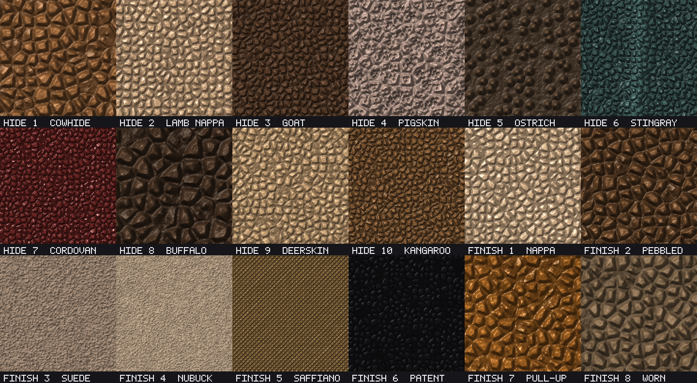
Natural hides
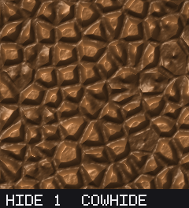
Cowhide Classic medium pebble; baseline 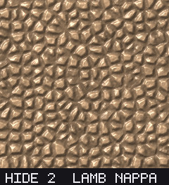
Lamb / nappa Fine soft grain, satin sheen 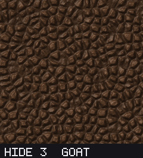
Goat / morocco Fine, matte, bookbinding 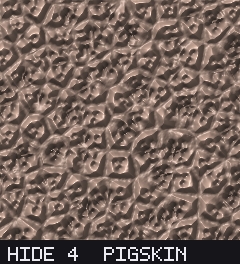
Pigskin Pebble with pore dots 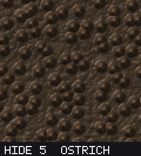
Ostrich Raised quill domes 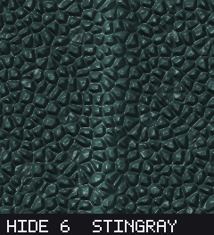
Stingray / shagreen Dense pebbles + ridge 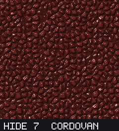
Horsehide / cordovan Tight grain, deep gloss 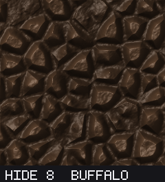
Buffalo / bison Large rugged grain 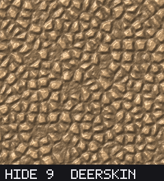
Deerskin Very fine, soft 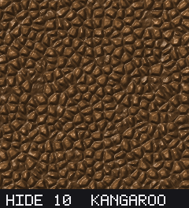
Kangaroo Fine, dense, directional
Finishes (over one common substrate)
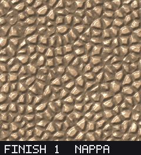
Nappa Smooth, soft sheen 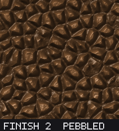
Pebbled Uniform pebble 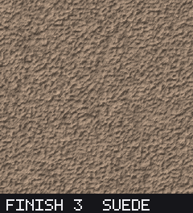
Suede Napped, matte 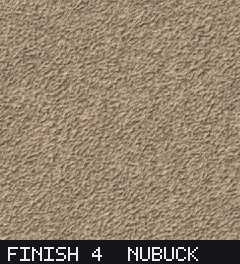
Nubuck Finer velvety nap 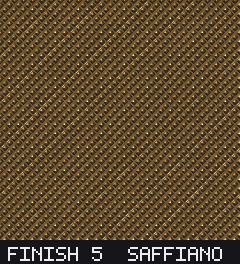
Saffiano Embossed crosshatch 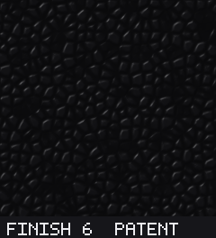
Patent Mirror gloss 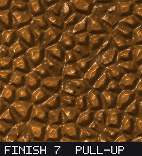
Pull-up / oiled Creased, waxy 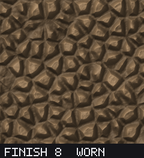
Worn Scuffed, aged